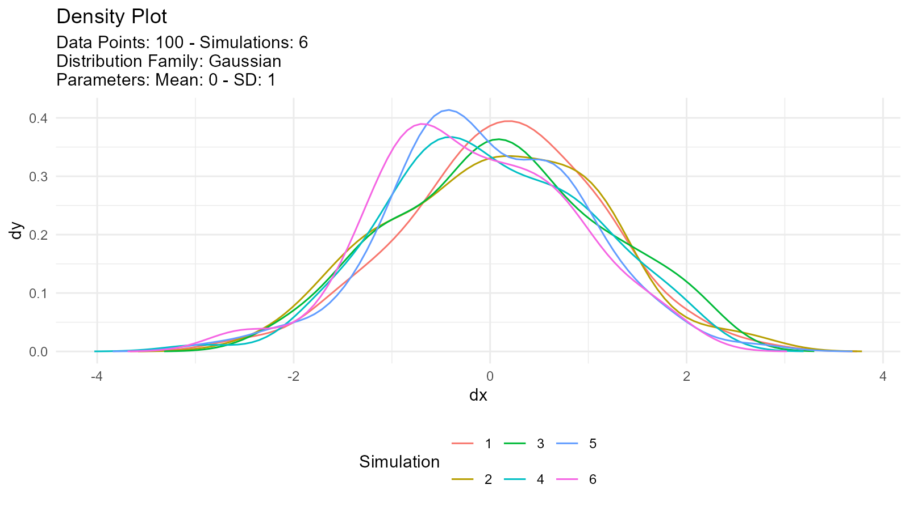

Example
This is a basic example which shows you how easy it is to generate data with TidyDensity:
library(TidyDensity)
library(dplyr)
library(ggplot2)
tidy_normal()
#> # A tibble: 50 x 7
#> sim_number x y dx dy p q
#> <fct> <int> <dbl> <dbl> <dbl> <dbl> <dbl>
#> 1 1 1 0.498 -3.27 0.000227 0.5 -Inf
#> 2 1 2 -0.0598 -3.11 0.000690 0.508 -2.05
#> 3 1 3 -0.774 -2.95 0.00182 0.516 -1.74
#> 4 1 4 -0.255 -2.79 0.00420 0.524 -1.54
#> 5 1 5 1.26 -2.63 0.00848 0.533 -1.39
#> 6 1 6 -0.605 -2.47 0.0152 0.541 -1.27
#> 7 1 7 0.435 -2.31 0.0242 0.549 -1.16
#> 8 1 8 1.06 -2.15 0.0349 0.557 -1.07
#> 9 1 9 1.41 -1.98 0.0464 0.565 -0.981
#> 10 1 10 -1.62 -1.82 0.0581 0.573 -0.901
#> # ... with 40 more rowsAn example plot of the tidy_normal data.
tn <- tidy_normal(.n = 100, .num_sims = 6)
tidy_autoplot(tn, .plot_type = "density")
tidy_autoplot(tn, .plot_type = "quantile")
tidy_autoplot(tn, .plot_type = "probability")
tidy_autoplot(tn, .plot_type = "qq")
We can also take a look at the plots when the number of simulations is greater than nine. This will automatically turn off the legend as it will become too noisy.
tn <- tidy_normal(.n = 100, .num_sims = 20)
tidy_autoplot(tn, .plot_type = "density")
tidy_autoplot(tn, .plot_type = "quantile")
tidy_autoplot(tn, .plot_type = "probability")
tidy_autoplot(tn, .plot_type = "qq")